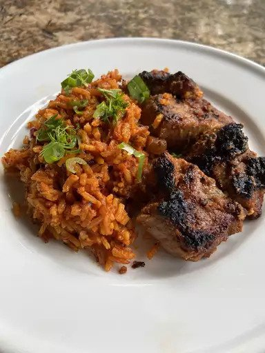

Jollof Rice

Description
This is a foolproof recipe for cooking Jollof rice, West Africa’s most popular dish. Could be served as a side with the West African-style grilled beef (Suya), but it can also be a main course.
Ingredients
- Tomato
- Pepper
- Fresno chili
- Garlic
- Ginger
- Water
- Spices
- Olive Oil
- Rice
- Red Onion
- Salt to taste
Steps
- Combine tomato, red bell pepper, habanero pepper, fresno chili, garlic, ginger, and water in a blender for the sauce. Blend on high until smooth and set aside.
- Heat olive oil in a saucepan over medium heat. Add onion and salt and sauté until onion starts to soften, 4 to 5 minutes. Clear space in the middle of the pan, add tomato paste, and sauté for 2 to 3 minutes. Season with paprika, curry powder, cumin, thyme, pepper, and turmeric; continue cooking for 1 to 2 minutes until everything is well combined.
- Turn off the heat, and stir in the rice, making sure every grain of rice is coated with the oil-tomato mixture. Add bay leaf and chicken bouillon paste.
- Turn heat to high, stir in tomato sauce, and bring to a vigorous simmer. Cover with a tight fitting lid, reduce heat to medium-low, and simmer for 20 minutes. Do not remove the lid or stir rice.
- Turn off heat after 20 minutes, and set the timer for 12 minutes. Allow rice to sit and do not remove the lid.
- After the 12 minutes are up, remove lid, and fluff rice with a fork, separating all the grains. Serve garnished with green onions and chopped cilantro.